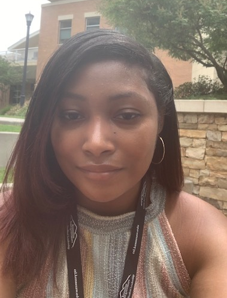

Kennedy was born and raised in Atlanta, Georgia, surrounded by a culture of innovation and creativity. Her interest in solving complex problems and approaching challenges from unique perspectives led her to pursue a Bachelor’s degree in Software Engineering.
During her studies, she developed strong skills in programming, UI/UX design, and team collaboration while discovering a passion for project coordination and management. Since graduating, she has gained hands-on experience in software development and project coordination while strengthening her knowledge of Lean Agile methodologies, risk management, and documentation. She also completed Google’s Project Management Certificate.
Currently, Kennedy is pursuing a Master’s degree in Software Engineering at Kennesaw State University to further expand her technical knowledge and explore advanced approaches to software development. She is excited to continue growing in both software development and project leadership while contributing to impactful projects.
Teach middle school students mathematics through personalized instruction, homework support, and problem-solving strategies to strengthen their understanding and confidence.
Provided technical support to staff and students, managed Chromebook inventory, and resolved hardware and software issues to ensure smooth daily technology operations.
Provided administrative support to staff and students, ensuring smooth daily operations and effective communication.
Edited and managed web content to ensure clarity, accuracy, and alignment with brand guidelines across digital platforms.
